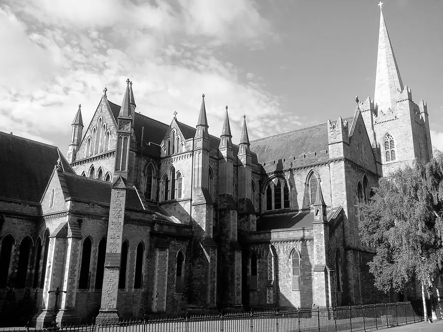
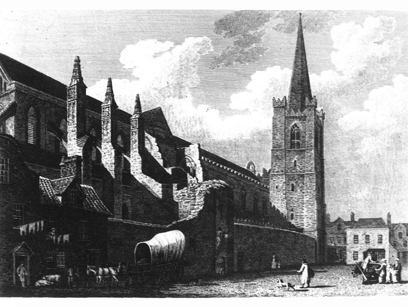
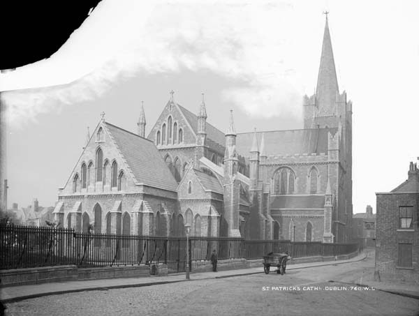
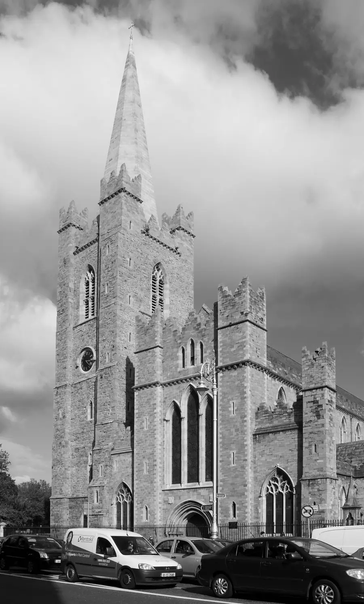
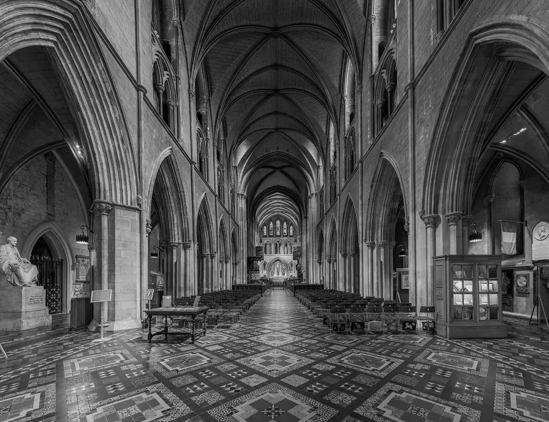
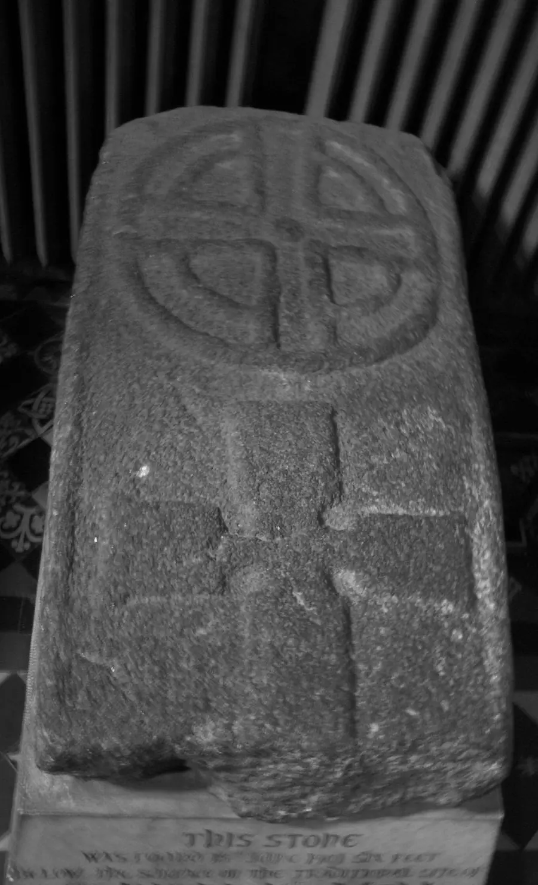
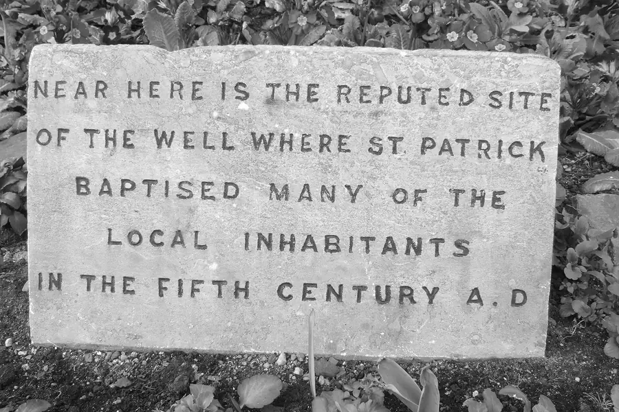
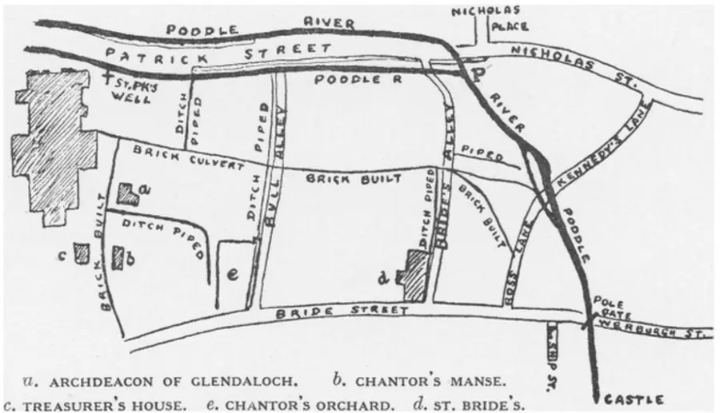
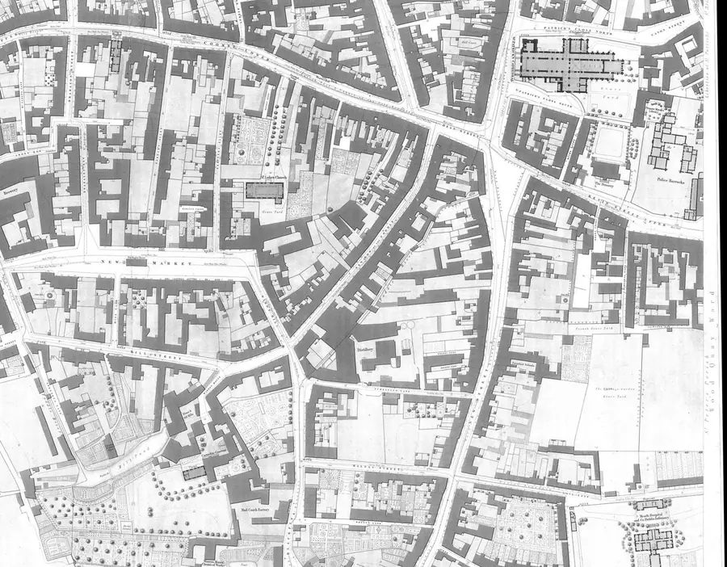

Stop 14 of 19 · Patrick Street
St Patrick’s Cathedral
Built between two streams, and flooded by them for centuries.
Between two streams
Near Patrick Street the Poddle once ran in two channels, one on each side of the street, joining again near Bride’s Alley before turning east towards the Castle. The first church of St Patrick stood on the island of dry ground between them, which is why the Normans called it St Patrick’s “in insula”, on the island. It was a holy site and a very wet one.
Tradition says that St Patrick baptised converts at a well here in the fifth century. The first record of a church on the site is from 890. The cathedral’s own account says that in 1901, during building works beside it, six carved grave slabs were found, and one of them was lying over what looked like an old well; other accounts date the find to the middle of the 19th century. The carving is dated to around the tenth century. The cathedral describes this as possibly, not certainly, the well of the story. The stone is now kept inside the cathedral, and a plaque in the park marks the reputed site of the well.
The architect Sir Thomas Drew left a more exact note, quoted by Ronan in 1927. On 16 June 1901, he wrote, the site of the well was found “in course of opening up the old arched course of the Poddle on the east side of Patrick Street by Spencer Harty, City Surveyor, to build a new tunnel (with concrete)”. It was marked by “an ancient granite stone marked with two crosses in high, clear relief”, built into the side of the old culvert, and the stone was taken into the cathedral on 19 June 1901. Drew and Harty thought the well itself had been lost when the river was diverted, probably under Charles II, into a great stone culvert along the cathedral’s west front to drive a corn mill there, the mill that gave Cross Poddle its name.
A cathedral on wet ground
John Comyn, the first Norman archbishop of Dublin, made the little church collegiate in 1191, with a body of clergy for worship and learning, and dedicated it on 17 March that year. His successor, Henry de Loundres, raised it to a cathedral; most accounts date this to about 1212 or 1213, and in 1220 he created the office of dean. The great stone church we see was built in the following decades, between about 1220 and 1270 by most counts, with the Lady Chapel added around 1270.
Building on an island in a river had a lasting cost. In the 20th century the water table was found to be within about 2.3 metres (seven and a half feet) of the floor, which is why the cathedral has never had a crypt, unlike Christ Church a few hundred metres away on its ridge above the Liffey.
Ditches, pipes and culverts
A Dublin Corporation map reproduced by Rev. Myles Ronan in 1927 shows how the water around the cathedral was gradually tamed. The two arms of the Poddle run along Patrick Street, with St Patrick’s Well marked beside the cathedral. Between the cathedral and Bride Street, the old open ditches between Bull Alley, Bride’s Alley and Ross Lane are marked “ditch piped” and “brick built”, with a brick culvert running across to the river. The canons’ houses and gardens, the Chantor’s Manse, the Treasurer’s House and the Chantor’s Orchard, sat in the middle of this network of drains.
Out of sight
By the 1860s the river had become an open sewer, blamed for disease as well as flooding, and its lower reaches were roofed over. Dublin Corporation’s minutes show the work going on in the Liberties at the start of the 20th century: the Donore Avenue covering above, then loans in 1902 and 1903 for covering, repairing and underpinning it. Under Charles II a Poddle Commission had been set up to manage it, with power to levy a Poddle tax; its powers passed in 1840 to the Paving Commissioners by one account, and to Dublin Corporation by Ronan’s. Ronan lists the brick culverts that followed: Bride’s Alley in 1868, Bull Alley in 1870, the Close in 1872 and St Patrick’s Place in 1880 to 1882.
Accounts differ on Patrick Street itself. One source says the street got its brick culvert in the 1920s, but Sir Thomas Drew’s note shows the City Surveyor building “a new tunnel (with concrete)” on the east side of the street in June 1901. McEntee and Corcoran add that Patrick Street had a culvert on each side until about 1904, and that the abandoned western one was uncovered and photographed when the road was widened in the 1990s.
The Guinness family changed the area twice. Benjamin Lee Guinness paid for the great restoration of the cathedral in 1860 to 1865, when it was feared the building might collapse. In 1901 his son Edward Cecil Guinness, Lord Iveagh, cleared the crowded houses to the north and laid out St Patrick’s Park, and it was during that work that the old slab and well were found. Newspapers of 1900 report that the Poddle’s own course was moved to make way for the new Bull Alley and Bride’s Alley buildings. In 1902 the Corporation passed a vote of thanks to Lord Iveagh for a gift of £1,400 towards the work of completing the river opposite St Patrick’s.
The river shaped local life in smaller ways too. The rough ground by the cathedral was policed by the “Poddle Guard”, a party of about twenty soldiers stationed nearby from 1725, and an 18th-century insult for an unruly Liberties crowd was a splash in the Poddle Hole. These details, with the newspaper sources, are gathered by the Crumlin and Walkinstown History Group’s Poddle project.
What to see
Stand in St Patrick’s Park and you are standing roughly on the island between the two old streams. The Poddle still runs beneath Patrick Street, along the west side of the park, in its culvert on the way to the Castle. Inside the cathedral, look for the old well slab, and notice that there are no steps down: the floor is as low as the water will allow.
The buttress that fell
Shortly after noon on 14 September 1882, without a moment’s warning, one of the great buttresses of the north chancel fell, killing three people. The Freeman’s Journal blamed the river: the cathedral was built on the lowest ground in the city, and the Poddle beneath it kept water lodged around its foundations.
Source: Freeman’s Journal, 15 September 1882.
The 1990 dig: a medieval mill
When Dublin Corporation widened Patrick Street and laid a new sewer in 1990, the archaeologist Claire Walsh excavated the old bed of the Poddle between March and July. In April her team found 13th-century timber revetments, stout oak walls sunk along the river’s banks to hold back floods, carry water into the city and win dry land from the marsh around the cathedral. In July they found a 13th-century corn mill of wood and stone, about ten metres long, the first medieval mill found in the city; it worked until the 15th century, when the river was diverted. The dig also turned up leather shoes, 12th-century coins, bronze pins and burials, one in an old lime kiln. At Nicholas Street there was evidence of the town wall and its ditch, with a lime kiln older than the channelling of the Poddle in the late 12th century; along Patrick Street, early wattle fences against flooding, a cobbled road and a tanning pit.
The site was recorded but not kept. Pat Wallace of the National Museum said it could add a great deal to our picture of medieval Dublin; the Corporation’s spokesman, Noel Carroll, said the dig was there to record the old river before the sewer went in.
Source: newspaper reports, 26 April, 15, 16 and 17 July 1990.
The Iveagh Buildings
Bull Alley Street runs from Bride Street to Patrick Street, with St Patrick’s Park along its south side. Around 1900 the Bride’s Alley district, the “Poddle Valley”, was some of the worst housing in Dublin, and some houses in Anderson’s Court and Patrick Street had collapsed into the river beneath them. Lord Iveagh paid for much of the rebuilding. The Corporation moved part of the Poddle so the new buildings would stand on firm ground, and rebuilt the old sewers that ran into it. The plan was for 29 blocks housing 210 families, in 112 three-room and 98 two-room flats. The two streams of the Poddle met again at the corner of Patrick Street and Dean Street, and from there the united river ran under Patrick Street, Ross Lane, Bride Street and Ship Street to the Castle.
Watch and read
- Antoine Giacometti, Blackpitts: Dublin’s medieval tanning quarter (PDF)
- St Patrick’s Cathedral: Saint Patrick and the cathedral
- Weston St John Joyce, The Neighbourhood of Dublin: the old city water supply
- Wikipedia: Zozimus (Michael Moran), citing P. J. McCall, Dublin Historical Record, 1945
- Arran Henderson: The best Poddle river
- Arran Henderson: the chapel on the island
- Wikipedia: St Patrick’s Cathedral, Dublin
From the planning file
Facts from the flood scheme’s planning application and four local planning files.
Poddle People
- Jonathan Swift: Dean of St Patrick’s, on the river’s island
- Sir Benjamin Lee Guinness: Restored St Patrick’s on its island
- Lord Iveagh (Edward Cecil Guinness): Rebuilt the Poddle valley
- Archbishops Comyn and de Loundres: Built on the river’s island
- Spencer Harty: The engineer who found St Patrick’s Well
Parts of this page draw on research by the volunteers of the Crumlin and Walkinstown History Group, shared with poddle.ie. About their research.

















